|
I am an Applied Research Scientist at Intel India, where I develop visual perception learning models for autonomous driving tasks to make self-driving cars safer and more reliable. Our team collects and maintains the India Driving Dataset (IDD) to bring autonomous and assisted driving solutions to unconstrained, heterogeneous traffic environments like India. I am presently advised by Dr.Anbumani Subramanian (Intel) towards realizing the ability of human minds to learn new concepts continuously from few examples, through techniques in computer vision. My work on few-shot and incremental learning techniques, have helped computer vision techniques to learn rare/unseen road objects on Indian roads and have been published at several top tier venues like NeurIPS, ICCV etc. Previously, I have worked as an Undergraduate Researcher at the Smart Grid Laboratory of Vellore Institute of Technology where I was advised by Dr. Gnana Swathika O.V. Here, my research realized a large-scale electrical grid through a dynamic computation graph and applied statistical Machine Learning algorthms to identify and rectify critical faults without any human intervention.Email / CV / Google Scholar / Github |

|
News
- Jan. 2022: Paper titled "Attention Guided Cosine Margin to Overcome Class-Imbalance in Few-Shot Road Object Detection" accepted at WACV 2022, DNOW workshop.
- Dec. 2021: Paper on "Meta-Guided Metric Learner for Overcoming Class Confusion in Few-Shot Road Object Detection" accepted at NeurIPS 2021, ML4AD workshop.
- Nov. 2021: Delivered a guest lecture on "Can Machines Learn Like Humans?" at VIT University to 2nd and 3rd year undergrads.
- Nov. 2021: Part of expert panel to judge Ideathon'21 at VIT University, Chennai Campus.
- Oct. 2021: Promoted to Applied Research Scientist at Intel.
- Jun. 2021: Paper on "Few-Shot Batch Incremental Road Object Detection via Detector Fusion" accepted at ICCV 2021, workshop on Autonomous Vehicle Vision.
- Dec. 2020: Paper on "Few-Shot Learning for Road Object Detection" accepted at AAAI 2021, workshop on Meta-Learning and MetaDL Challenge.
- Sep. 2020: Released the world's first Few-Shot Learning dataset for identifying rare road objects in India Driving Dataset.
- Oct. 2019: Secured the 3rd rank globally at the FAIR Self-Supervised Learning Challenge, ICCV 2019.
- Jul. 2019: Secured the 3rd rank globally for the Pose track at the Amur Tiger Re-Identification Challenge, ICCV 2019.
- Jun. 2018: Joined Intel, India as a Deep Learning Researcher at the Advanced Car Lab.
- May. 2018: Graduated from VIT. Received the Chancellor's Gold Medal for rsecuring the 1st rank.
- Dec. 2017: Joined Intel, India as an Undergraduate Technical intern.
|
My primary research interest lies in computer vision tasks with a focus on techniques like few-shot learning, continual learning and Self-supervised learning. Much of my research has been applied to autonomous navigation tasks in unconstrained environments like India Driving. |
|
|
|
|
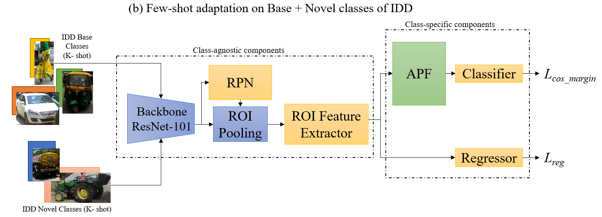
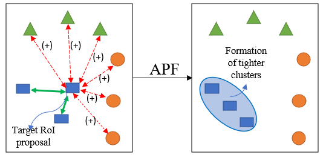
|
Ashutosh Agarwal, Anay Majee, Anbumani Subramanian, Chetan Arora WACV, 2022, Dealing With Novelty in the Open-World (DNOW) (Oral) paper / arXiv Feature fusion from visually similar Region-of-Interest proposals to overcome catastrophic forgetting in few-shot object detection. |
|
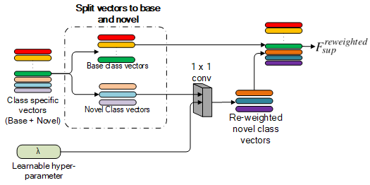
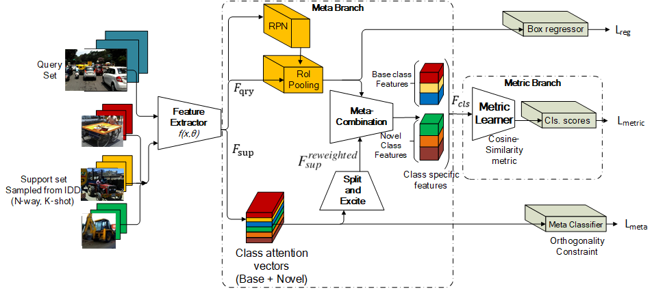
|
Anay Majee, Anbumani Subramanian, Kshitij Agrawal NeurIPS, 2021, Machine Learning For Autonomous Driving (ML4AD) paper / arXiv / poster Unified meta and metric learning technique to overcome Class Confusion in few-shot road object detection. |
|
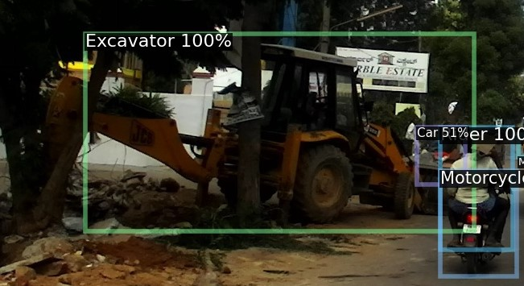
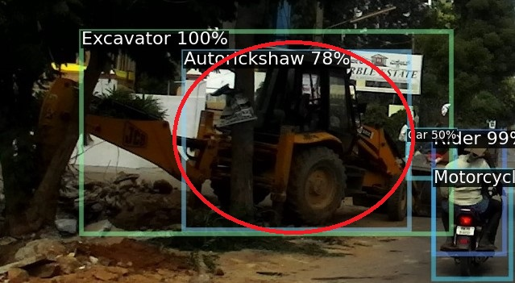
|
Anuj Tambwekar, Kshitij Agrawal, Anay Majee, Anbumani Subramanian ICCV, 2021 Autonomous Vehicle Vision (AVVision) (Oral) paper / arXiv Incremental learning technique which combines disentangled object predictor heads to continuously learn novel road objects in IDD. |
|
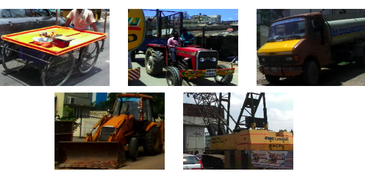
|
Anay Majee, Kshitij Agrawal, Anbumani Subramanian AAAI, 2021 Workshop on Meta-Learning paper / arXiv / Dataset The world's first few-shot learning dataset to identify rare/unseen road objects in unconstrained, heterogeneous traffic environments depicted by the India Driving Dataset. |
|
| 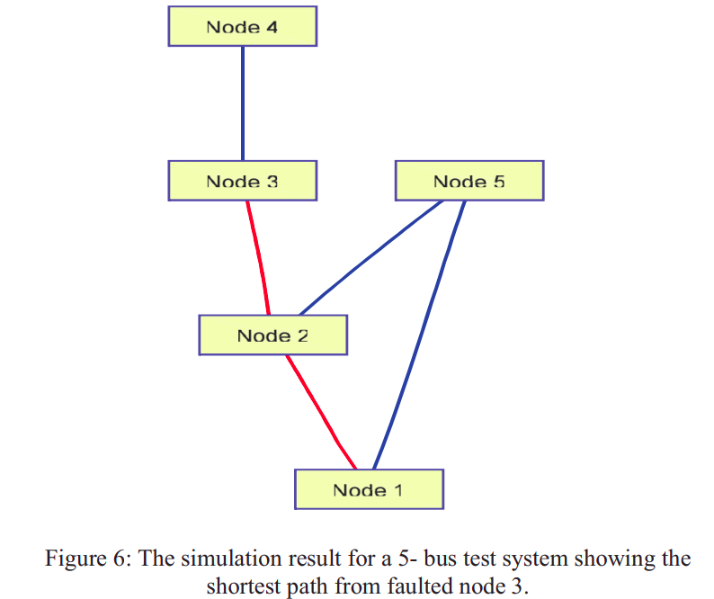 |
Anay Majee, Gnana Swathika O.V International Conference on Power and Embedded Drive Control (ICPEDC), 2017 paper System for automated reconfiguration of microgrids to rectify overcurrent faults in electrical systems. |
|
| 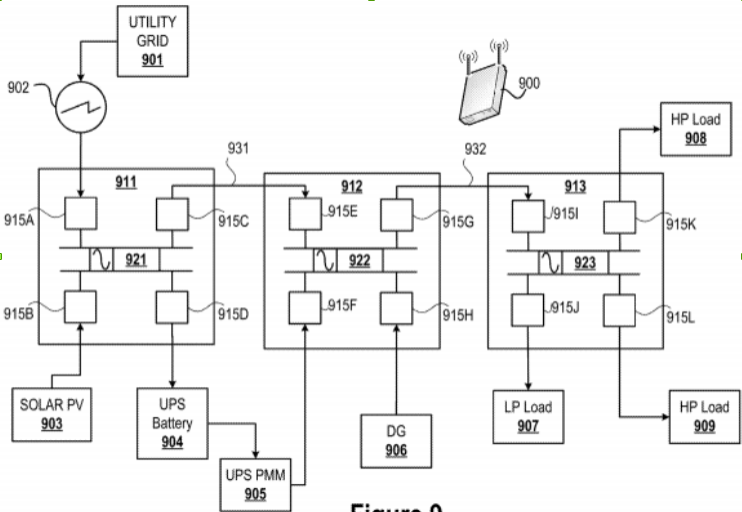 |
Dileep Paruchuri, Anay Majee, Pranesh SK, Yashasvi Bhargava US Patent Office, Dec. 2020 Realize a reconfigurable microgrid as a dynamic computation graph and apply ML techniques to rectify major faults. |
|

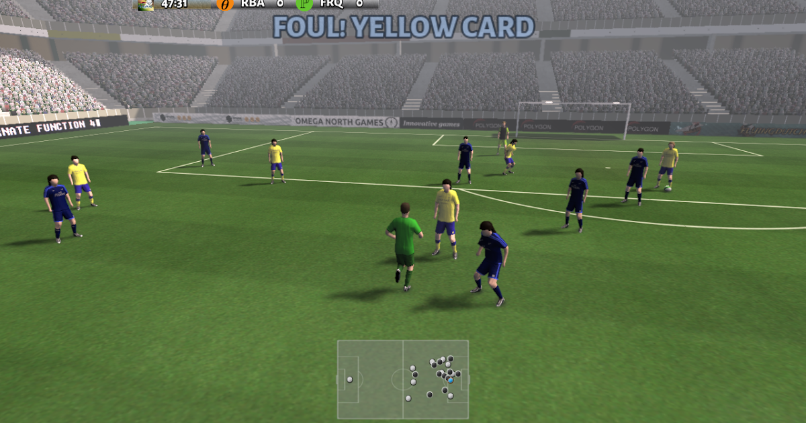
|
Anay Majee Dec. 2019 Reinforcement Learning Algorithm (PPO) to dynamically learn and play football. |
| 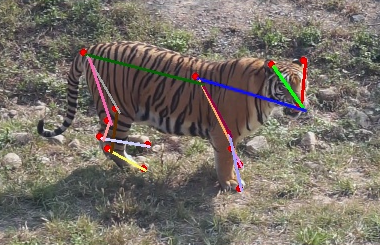 |
Anay Majee, Kshitij Agrawal Jun. 2019 In this work we address the keypoint estimation problem and propose techniques to improve the performance of Deep Learning based keypoint-estimation algorithms on small-scale datasets. |
|
Source adapted from Jon Barron. |